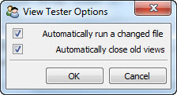

Defines a tool for displaying and/or testing the Facets UI View associated with an input source file.
You can use the tool either by connecting a Python source file to the tool’s file_name facet or by dropping the Python source file containing the view to be tested onto the file drop icon on the tool’s feature toolbar.
In order for a source file to work with the view tester, it must have a module-level view or demo symbol defined whose value is either a HasFacets subclass or subclass instance. The tool will then display the default view associated with the subclass or instance. In the case of a subclass, the tool will also attempt to create an instance of the class to use when creating the view.
If the source file contains syntax errors, or does not define a valid view or demo module-level variable, an appropriate error message is displayed at the bottom of the tool’s view.
Using the tool’s options dialog, you can also configure the tool so that it automatically attempts to reload the source file’s view any time the source file is changed. This can be handy for testing a view being developed, since you can simply save the file in your text editor to see the changes to the view reflected in the view tester tool.
Using the options dialog you can also configure the tool to keep copies of previous views open when a new version of the view is created. Again, this can be useful while developing a view to quickly see which version of a view looks or works better.
facets.extra.tools.view_tester
None.
In addition to its input connections, the view tester tool also supports setting the following facets through the tool’s options dialog available via the tool’s feature toolbar:
Shows the view tester tool displaying the view for one of the Facets UI demos.
The view tester tool’s options dialog.